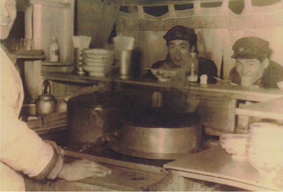
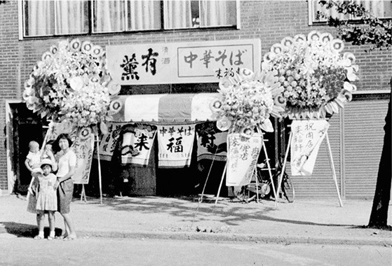
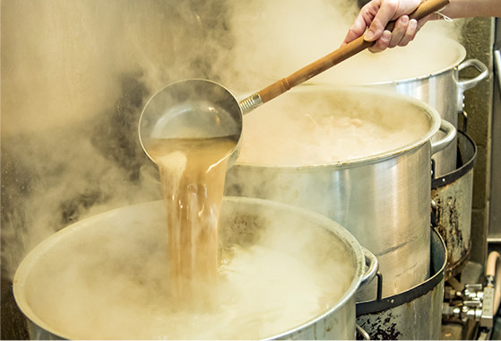
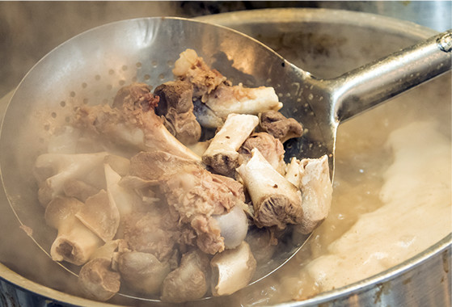

Tonkotsu ramen, which is taking the world by storm, was born in Kyushu
A bowl of ramen of the oldest existing tonkotsu ramen shop, Nankinsenryo
Recently, Japanese ramen has been gaining popularity all around the world, almost reaching the level of popularity earned by sushi. Ramen has a wide variety of soups, noodles, and ingredients, including tonkotsu (pork bone) soup, shoyu (soy sauce) soup, miso soup, and original noodles. There are numerous kinds of local ramen all over Japan. Among others, tonkotsu ramen has been gaining fans around the world, as a “hot” Japanese dish. Kyushu is the birthplace of tonkotsu ramen and the “holy ground of tonkotsu,” with its deeply-rooted tonkotsu ramen culture. This article will start with introducing the history of the origin and spread of Kyushu Ramen.
Tonkotsu ramen, which is taking the world by storm, was born in Kyushu
Kyushu Ramen is a collective term for local noodles in Kyushu, including Hakata Ramen and Kumamoto Ramen. Although thickness of the noodles and ingredients may vary, the soup, which is the base of the dish, is uniformly white, cloudy tonkotsu soup. When talking about Kyushu Ramen, one must mention Kurume City (Fukuoka Prefecture) which is said to be the birthplace of tonkotsu ramen.
Tonkotsu ramen was first created at Nankinsenryo, a street-side vendor selling ramen on Meiji-dori Street in Kurume City in 1937. The first owner, who used to run an udon noodles shop, created tonkotsu ramen based on the combination of “shina-soba” (shoyu ramen), which was popular at the time in Tokyo and Yokohama, and “champon” noodles, which is the local specialty of his own hometown, Nagasaki. At that time, although Chinese restaurants offered noodles in soup, the soup was made from chicken bones. It is said that the owner decided to use pork bone, as it was cheaper than chicken bones.
-

Nankinsenryo around 1945
-

One of the oldest ramen shops, Raifukuken, is shown in the photo above. You can see that ramen used to be called “chuka-soba”(Chinese noodles) rather than ramen.
However, the first ramen noodles created at Nankinsenryo were different from the typical tonkotsu ramen we see nowadays. The soup used to be somewhat clear.
So, how and when was the white, cloudy soup born? It was at Sankyu in Kurume City, which started up in 1947, 10 years after Nankinsenryo created the tonkotsu ramen.
One day, when the owner went out, tonkotsu soup was simmering on the stove. The soup got so boiled that it became white and cloudy. He seasoned it, tried it, and found it was very delicious. In this way, white, cloudy tonkotsu soup was born by accident.
From Kurume to all over Kyushu
Sankyu, who created the white, cloudy tonkotsu soup, later opened branches in Saga City (Saga Prefecture) and Tamana City (Kumamoto Prefecture). The founders of famous ramen shops, including Keika, Komurasaki, Ajisen Ramen, and Shoyoken, visited the Tamana branch of Sankyu to learn the taste of the new tonkotsu soup and later opened their own shops of tonkotsu ramen in Kumamoto City, creating a new type, Kumamoto Ramen, which is characterized by deep-fried garlic chips. In addition, Miyazaki Ramen also traces its origin to Kurume.
As described above, tonkotsu ramen, which was born in Kurume, spread all over Kyushu in a radial fashion and developed as original ramen in each area. Another contributor to the prevalence of tonkotsu ramen is long-distance truck drivers. They spread the reputation of tonkotsu ramen all over Japan. Recently, ramen shops from Fukuoka extended their business not only to other areas across the country but also all over the world, further enhancing its popularity.
Nankinsenryo in Kurume City (Fukuoka Prefecture), the birthplace of Kyushu Ramen, is still in business and is now celebrating its 80th anniversary in 2017. In this milestone year, enjoy tonkotsu ramen while recalling to mind the story behind the acclaimed dish
-

Tonkotsu ramen these days usually has a cloudy soup, which is made by boiling pork bones on high heat.
-

Ramen with a soup made from simmered pork bones is collectively called “tonkotsu ramen.” Ramen shops establish originality in their dish by using unique combinations of pig parts, including heads and backbones, and various cooking times.